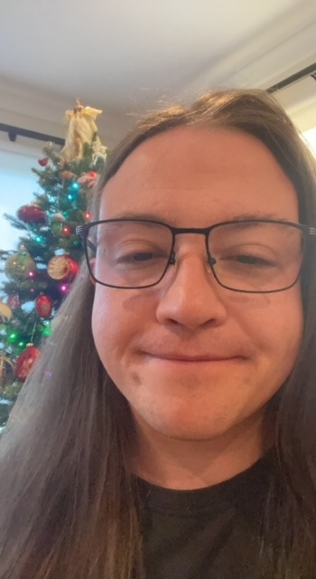

Victor Williams s3992257@student.rmit.edu.au I’m Victor Williams living in Australia, Victoria. High school education (De La Sallle). I’m 24 years sold and speak English and Ukranian fluently. Fun fact about myself is that I was born in Ukraine and came to Australia when I was 11.
My interest in IT comes from school where I studied it in year 11 and 12. Live took me on a different path after school where I spent 6 years cooking and ended up running a kitchen, but I decided that wasn’t for me and I wanted to go back to study. IT always has been interesting to me however not specific field. I hope in studying this and other courses I find the area that suits me and my interests. There wasn’t a specific event or person that sparked my interest in IT but if I had to take to pick one, I’d say Michael Reeves. Michael is an online person who specialises in making inventions for different scenarios. I wasn’t sure where to go and study so I called Open Universities and spoke to a person there for a long time and we decided that RMIT was the best choice for me to begin my study. I had a look at the courses, and we decided that it was best to do the introductory ones first and then see how I go. My expectations are to gain a deeper understanding of the world of IT and how to use it to further study it. The course so far has been interesting and inviting. How I can apply the skills learned to everyday use and to make things easier for myself and others around me.